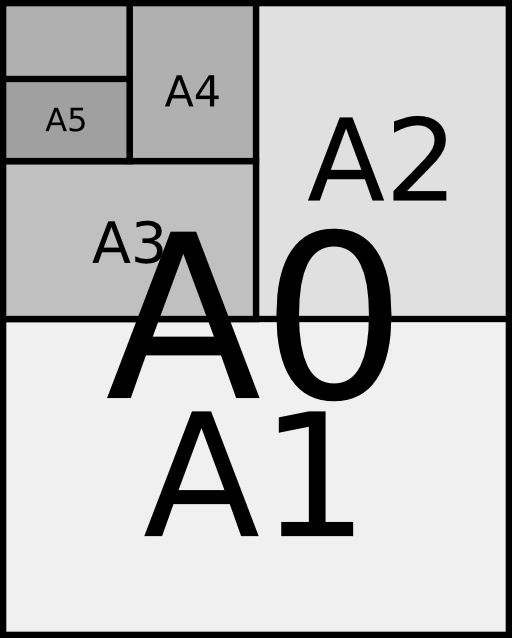

2. hét: vezérlési szerkezetek
Czirkos Zoltán, Nagy Gergely, Pohl László · 2015.02.18 · Frissítve: 2015.02.15
Gyakorlófeladatok a 2. előadás anyagához kapcsolódóan.
Ezen az oldalon rengeteg feladat található a gyakorláshoz. Egy részük megoldással együtt, míg a többi anélkül. A gyakorlófeladatok megoldásához elvileg elegendő az az ismeretanyag, amely az előadáson szerepelt. Természetesen a megoldás kitalálásához szükség lehet arra a rálátásra és tapasztalatra, amit a gyakorlatok és a laborok adnak. A feladatok témakörök szerinti csoportosítása viszont ettől függetlenül az előadást követi.
Felhívjuk a figyelmed arra, hogy a megoldások olvasgatása lényegében nulla tapasztalatot és gyakorlatot ad, így az eredményes számonkérésekhez nem tud hozzásegíteni! A megoldásokat akkor nézd csak meg, ha a saját megoldás elkészítése közben elakadsz. Lásd itt.
1Elágazások
Pozitív, negatív, nulla
Készíts programot, mely a felhasználótól bekért számról megállapítja, hogy az a.) pozitív, negatív vagy nulla, b.) egész vagy nem egész. Az eredményt a képernyőre szöveges válasz formájában írja ki!
Fizetés
Készíts programot, mely beolvas a felhasználótól egy fizetést, és a fizetés nagyságától függően kiírja, hogy az alacsony, átlagos, vagy magas! A kategóriákat a saját preferenciád alapján határozhatod meg! :D
Másodfokú egyenlet
Írd át úgy a labor másodfokú egyenlet programját, hogy vegye az figyelembe a diszkrimináns előjelét, és jelezze külön azt is, ha nincs megoldás, vagy ha pontosan egy valós megoldás van! Ha tanultál már komplex számokról, oldd meg úgy is a feladatot, hogy komplex gyökök esetén azokat írja ki a program!
Egyenletrendszer
Készíts programot, mely képes megoldani az alábbi egyenletrendszert:
ax + by = p cx + dy = q
Az adatok: a,c,b,d, p és q. Vizsgálja meg, hogy az egyenletrendszer megoldható-e, illetve függetlenek-e az egyeneletek. Ha létezik megoldás, számolja ki x és y értékét!
2Ciklusok
Első N darab négyzetszám
Írj programot, amely kiírja az első N darab négyzetszámot! N értékét kérd a felhasználótól!
Négyzetszámok N-ig
Írd ki a képernyőre az összes N-nél kisebb négyzetszámot! Vigyázz: ez nem ugyanaz a feladat, mint az előző!
Gömbök
Készíts programot, mely kiírja az 1 köbméternél kisebb térfogatú, 10 cm-ként növekvő sugarú gömbök térfogatait!
Összes szám
Írj programot, amely a képernyőre írja a 4, 5 és 6 számjegyekből képezhető összes négyjegyű számot!
Hatványozó program
Írj programot, amely hatványozni képes! Kérdezze meg az alapot (valós) és a kitevőt (egész), és írja képernyőre a hatvány értékét!
Sorozat
Készíts programot, mely bekér egy számot (k), majd kiszámítja az alábbi összeget:
y=1×2 + 2×3 + 3×4 + ... + k×(k+1)
Sorozat eleme
Írj programot, ami ki tudja számolni a következő sorozat n-edik elemét: x0=2;
xi=2·xi-1+5. Az n értékét kérd a felhasználótól! Írd meg úgy
is, hogy csak az n-edik íródik ki a képernyőre, és úgy is, hogy az első n eredmény!
Köbgyök
Newton módszere a köbgyök számítására azon alapszik, hogy ha van egy tippünk a szám köbgyökére, akkor
szám/tipp2+2·tipp
─────────────────
3
jobb közelítés. Írj az előadáson bemutatott „Hérón módszere” programhoz hasonlót köbgyök számítására!
Megoldás
#include <stdio.h>
#include <math.h>
int main(void) {
double szam, tipp;
szam = 512;
tipp = 1;
while (fabs(tipp-szam/tipp/tipp) > 0.1)
tipp = (szam/(tipp*tipp) + 2*tipp)/3;
printf("%g\n", tipp);
return 0;
}
e: a természetes logaritmus alapszáma I.
Az e=2,7182818… matematikai konstans előállítható az alábbi képlettel:
1 1 1 1 1
e = ── + ── + ── + ── + ── + …
0! 1! 2! 3! 4!
Írj programot, amely kiszámolja ezt az első 20 taggal!
A faktoriális nagy szám lehet. Tárold azt double
típusú változóban!
Megoldás
Tipp: ha ciklusban ciklust alkalmaztál, próbáld meg egyszerűsíteni a megoldásodat. Elég egyetlen egy ciklus!
#include <stdio.h>
int main(void) {
double e; /* e tárolása */
double fact; /* Faktoriális tárolása */
int i; /* Ciklusváltozók */
e = 0;
fact = 1;
for(i = 1; i < 20; i = i+1) {
e = e + 1/fact; /* Hozzáadjuk e-hez */
fact = fact*i;
}
printf("e = %f",e); /* Kiírjuk */
return 0;
}
e: a természetes logaritmus alapszáma II.
Írj programot, mely kiszámítja az a(n)=(1+1/n)^n
sorozat k-adik elemét. A k változó értékét kérdezd a felhasználótól!
(A hatványozáshoz most ne használd a pow() függvényt.)
A π kiszámítása
John Wallis, angol matematikus az alábbi képletet adta a π kiszámítására:
π 2·2 4·4 6·6 8·8 ─ = ─── · ─── · ─── · ─── · … 2 1·3 3·5 5·7 7·9
Ismerd fel a szabályosságot a sorozatban! Írj progamot, amelyik kiszámítja a szorzatot az első n tényező figyelembe vételével! Próbáld ki a programot úgy, hogy a szorzat első 10, 100, 1000 tényezőjét veszed figyelembe!
Megoldás
#include <stdio.h>
int main(void) {
double pi; /* pi tárolása */
int i;
pi=1;
i=2; /* 2-től indul */
for (i=2; i<10000; i=i+2) /* kettesével */
pi = pi * i * i / ((i-1)*(i+1)); /* a képlet */
/* Kiírásnál szorozzuk még kettővel a képlet miatt */
printf("%f", pi*2);
return 0;
}
3Összetett vezérlési szerkezetek
Számtani sorozat
Egy program bekér a felhasználótól három valós számot, kiírja, hogy az első szám negatív
vagy nemnegatív, majd az első számtól indulva, a második szám által meghatározott lépésközzel
halad a harmadik számig, a számsorozat elemeit kiírja.
Pl. be: 3.2 0.6 5.1 ki: nemnegativ 3.2 3.8 4.4 5.0
Pl. be: -1.7 1.0 2.5 ki: negativ -1.7 -0.7 0.3 1.3 2.3
Feltételezheted, hogy az első szám kisebb, mint a harmadik, és a
második szám pozitív. Ezek ellenőrzésével nem kell foglalkoznod.
Megoldás
#include <stdio.h>
int main(void) {
double a, step, b, i;
scanf("%lg%lg%lg", &a, &step, &b);
if (a < 0)
printf("negativ ");
else
printf("nemnegativ ");
i=a;
while (i <= b) {
printf("%g, ",i);
i = i + step;
}
return 0;
}
Sorozat növekvő lépésekkel
Egy program bekér a felhasználótól két pozitív egész számot, és a kisebbiktől a nagyobbikig
növekvő lépésközzel kiírja a számokat. A lépésköz kezdetben 1, és minden lépésben eggyel nő. A
program akkor is helyesen működik, ha a felhasználó előbb a felső, aztán az alsó határt adja meg
(és fordítva is).
Pl. be: 4 23 ki: 4 5 7 10 14 19
Pl. be: 23 4 ki: 4 5 7 10 14 19
Megoldás
#include <stdio.h>
int main(void) {
int elso, masodik, also, felso, i, step;
printf("Elso = "); scanf("%d",&elso);
printf("Masodik = "); scanf("%d",&masodik);
if (elso > masodik) { also = masodik; felso = elso; }
else {also = elso; felso = masodik; }
i = also;
step = 1;
while (i <= felso) {
printf("%d ", i);
i = i + step;
step = step + 1;
}
return 0;
}
Szögek
Egy program bekér a felhasználótól két valós számot, melyek két szöget jelentenek °-ban. A
program a kisebb szögtől a nagyobbig haladva kiírja a szögeket egy fokonként, és mindegyik szög
mellett zárójelbe téve radiánban is kiírja a szöget (1°=π/180 rad). A program akkor is helyesen
működik, ha a felhasználó előbb a nagyobb, aztán a kisebb szöget adja meg (és fordítva is).
Pl. be: 11.3 14.9 ki: 11.3 (0.197), 12.3 (0.215), 13.3 (0.232), 14.3 (0.249),
Pl. be: 180 176 ki: 176 (3.07), 177 (3.09), 178 (3.11), 179 (3.12), 180 (3.14),
Megoldás
#include <stdio.h>
int main(void) {
double also, felso, i;
scanf("%lg %lg",&also, &felso);
if (also>felso) {
double temp=also;
also=felso;
felso=temp;
}
i = also;
while (i<=felso) {
printf("%g (%g), ", i, i*3.14/180);
i = i + 1;
}
return 0;
}
Csökkenő sorozat
Egy program bekér a felhasználótól két pozitív valós számot, és a nagyobbiktól induló
csökkenő számsorozatot ír ki. A csökkenés lépésköze a kisebbik szám. A csökkenés addig tart,
amíg a kiírandó érték nagyobb, mint a kisebbik szám. A program akkor is helyesen működik, ha a
felhasználó előbb a nagyobb, aztán a kisebb számot adja meg (és fordítva is).
Pl. be: 1.1 5.2 ki: 5.2 4.1 3.0 1.9
Pl. be: 6.3 2.1 ki: 6.3 4.2
Megoldás
#include <stdio.h>
int main(void) {
double also, felso, i;
scanf("%lg %lg",&also, &felso);
if (also>felso) {
double temp=also;
also=felso;
felso=temp;
}
i = felso;
while (also<i) {
printf("%g ", i);
i = i - also;
}
return 0;
}
Szorzótábla fejléccel
| 1 2 3 4 5 --+------------------- 1| 1 2 3 4 5 2| 2 4 6 8 10 3| 3 6 9 12 15 4| 4 8 12 16 20 5| 5 10 15 20 25
Tervezz programot pszeudokóddal, amely kiírja a képernyőre az N×N-es szorzótáblát, ahol N értékét a felhasználó adhatja meg. Valósítsd meg C nyelven! Ügyelj arra, hogy a számok állandó oszlopszélességgel jelenjenek meg (maximum 16×16-as táblát feltételezve), azaz pl. az oldalt látható módon. (Ez abban nehezebb az előadáson bemutatottnál, hogy a szorzótáblának kerete is kell legyen.)
Megoldás
#include <stdio.h>
int main(void) {
int x, y;
/* Keret felső része */
printf(" |");
for (y=1; y<=16; y=y+1) printf("%3d ",y);
printf("\n");
printf("---+");
for (y=1; y<=16; y=y+1) printf("----");
printf("\n");
/* Szorzótábla */
for (y=1; y<=16; y=y+1) {
printf("%2d |",y); /* Keret bal oldala */
for (x=1; x<=16; x=x+1)
printf("%3d ", x*y); /* Számok */
printf("\n");
}
return 0;
}
Táblázat
Készíts programot, mely egy n×n-es táblázat formájában kiírja a pozitív egész számokat 1-től n2-ig. Az n értékét induláskor kérje be a felhasználótól!
Téglalapok
ooooo ooooo ooooo ooooo ooooo ooooo ooooo ooooo ooooo ooooo ooooo ooooo
Készíts programot, mely egy m oszlopból és n sorból álló mátrixot rajzol a képernyőre, melynek minden eleme egy a×b méretű, "o" betűkből álló téglalap. A téglalapok között k szóköz/sortörés távolságot hagyj ki! Példa: m=3, n=2, a=5, b=2, k=1 értékekre a jobb oldalt látható.
Csúcsán álló háromszög 1.
ooooo ooo o
Írj C programot, amely kér a felhasználótól egy számot, és utána egy akkora, csúcsán álló egyenlőszárú háromszöget rajzol a képernyőre "o" betűkből, hogy annak éppen a megadott számú sora van! Például 3 esetén:
Megoldás
#include <stdio.h>
int main(void) {
int n,i,j;
printf("Emelet=");
scanf("%d",&n);
for (i=0; i<n; i++) {
for (j=0; j<i; j++)
printf(" ");
for (j=0; j<2*(n-i)-1; j++)
printf("o");
printf("\n");
}
return 0;
}
Csúcsán álló háromszög 2.
o oo ooo oo o
Írj C programot, amely kér a felhasználótól egy számot, és utána egy akkora, csúcsán álló egyenlőszárú háromszöget rajzol a képernyőre "o" betűkből, hogy annak éppen a megadott számú sora van! Például 3 esetén:
Megoldás
#include <stdio.h>
int main(void) {
int n,i,j;
printf("Emelet=");
scanf("%d",&n);
for (i=0; i<n; i++) {
for (j=0; j<n-i-1; j++) printf(" ");
for (j=0; j<=i; j++) printf("o");
printf("\n");
}
for (i=1; i<n; i++) {
for (j=0; j<i; j++) printf(" ");
for (j=0; j<n-i; j++) printf("o");
printf("\n");
}
return 0;
}
Paralelogramma
ooooooo ooooooo ooooooo
Írj C programot, amely kér a felhasználótól egy szélességet és egy magasságot, és utána egy akkora paralelogrammát rajzol a képernyőre "o" betűkből! Például x=7, y=3 esetén:
Megoldás
#include <stdio.h>
int main(void) {
int x, y, i, j;
printf("x="); scanf("%d", &x);
printf("y="); scanf("%d", &y);
for (i=0; i<y; i++) {
for (j=0; j<y-i-1; j++) printf(" ");
for (j=0; j<x; j++) printf("o");
printf("\n");
}
return 0;
}
Még egy háromszög
ooooo
oooo
ooo
oo
o
Írj programot, amely kér egy n egész számot a felhasználótól, és utána „o”
betűkből egy akkora háromszöget rajzol, amennyi a szám. Pl. n=5 esetén az alábbi
rajz jelenik meg a kimenetén.
Megoldás
#include <stdio.h>
int main(void) {
int n, x, y;
printf("Haromszog magassaga?\n");
scanf("%d", &n);
for (y=0; y<n; y+=1) {
for (x=0; x<y; x+=1)
printf(" ");
for (x=y; x<n; x+=1)
printf("o");
printf("\n");
}
return 0;
}
Háztető
##
# #
# #
# #
# #
Írj programot, amely kér egy n egész számot a billentyűzetről, és utána akkora
„háztetőt” rajzol kettőskereszt karakterekből, amekkora a szám. Pl. n=5 esetén az
alábbi rajz jelenik meg a kimeneten.
Megoldás
#include <stdio.h>
int main(void) {
int n, x, y;
printf("Hazteto magassaga?\n");
scanf("%d", &n);
for (y=0; y<n; y+=1) {
for (x=0; x<n-y-1; x+=1)
printf(" ");
printf("#");
for (x=0; x<y*2; x+=1)
printf(" ");
printf("#");
printf("\n");
}
return 0;
}
Szakasz
xxx
xxx
xxx
xxx
xxx
Írj programot, amely két számot (m és n) kér a billentyűzetről, és
egy szakaszt rajzol karakterekből összerakva. A szakasz darabjainak a hosszát az első szám adja
meg, a sorok számát a második. Pl. m=3, n=5 esetén:
Megoldás
#include <stdio.h>
int main(void) {
int m, n, x, y;
printf("Vonal darabok szelessege, osszmagassag?\n");
scanf("%d %d", &m, &n);
for (y=0; y<n; y+=1) {
for (x=0; x<m*y; x+=1)
printf(" ");
for (x=0; x<m; x+=1)
printf("x");
printf("\n");
}
return 0;
}
Két szakasz
# #
# #
# #
# #
# #
Írj programot, amely beolvas egy egész számot, és egymás mellé rajzol két ferde vonalat,
karakterekből összerakva. A második vonal teteje egy karakterrel arrébb kezdődik, mint az első
vége. Pl. ha a megadott n szám 5, a kimeneten az alábbi rajz jelenik
meg.
Megoldás
#include <stdio.h>
int main(void) {
int n, x, y;
printf("Atlos vonal hossza?\n");
scanf("%d", &n);
for (y=0; y<n; y+=1) {
for (x=0; x<y; x+=1)
printf(" ");
printf("#");
for (x=0; x<n-1; x+=1)
printf(" ");
printf("#");
printf("\n");
}
return 0;
}
Sakktábla
XX XX XX XX XX XX XX XX XX XX XX XX XX XX XX XX XX XX XX XX XX XX XX XX XX XX XX XX XX XX XX XX XX XX XX XX XX XX XX XX XX XX XX XX XX XX XX XX XX XX XX XX XX XX XX XX XX XX XX XX XX XX XX XX
Rajzolj a képernyőre sakktáblát, ahogyan az oldalt látható! Hogyan lehet ezt a legtöbb ciklussal, a programban szereplő legrövidebb kiírt szövegekkel megoldani? Vagyis ne szerepeljen a programban ilyesmi:
printf("XX XX XX XX \n");
printf("XX XX XX XX \n");
Megoldás
#include <stdio.h>
int main(void) {
int i, j, k;
for (i=1; i<=4; i=i+1) {
for (j=1; j<=2; j=j+1) {
for (k=1; k<=4; k=k+1)
printf("XX ");
printf("\n");
}
for (j=1; j<=2; j=j+1) {
for (k=1; k<=4; k=k+1)
printf(" XX");
printf("\n");
}
}
return 0;
}
Adott méretű négyzet rajzolása
+--+ | | | | +--+
Írj C programot, amelyik bekér egy számot, és utána akkora négyzetet rajzol a +, - és | karakterekből, mint a megadott szám (annyi - és | karakterből áll az oldala). Pl. ha n=2, akkor a jobb oldalt látható négyzet legyen a kimenet!
Megoldás
#include <stdio.h>
int main(void) {
int x, y, n;
printf("Mekkora negyzet? ");
scanf("%d", &n);
/* elso sor: +----+ */
printf("+");
for (x=0; x<n; ++x)
printf("-");
printf("+\n");
/* kozepso sorok: | | mint az elso,
csak a karakterek masok. */
for (y=0; y<n; ++y) {
printf("|");
for (x=0; x<n; ++x)
printf(" ");
printf("|\n");
}
/* utolso sor: +----+ ugyanaz, mint az elso. */
printf("+");
for (x=0; x<n; ++x)
printf("-");
printf("+\n");
return 0;
}
Tetszőleges méretű sakktábla
n=1 **.. n=2 **..**..
**.. **..**..
..** ..**..**
..** ..**..**
**..**..
**..**..
..**..**
..**..**
Írj C programot, amelyik egy egész számot kér, utána pedig . és * karakterekből adott méretű sakktáblát rajzol. Pl. n=1 és n=2 esetén a jobb oldalt látható eredmények.
Megoldás
#include <stdio.h>
int main(void) {
int x, y, n;
printf("Mekkora sakktabla? ");
scanf("%d", &n);
/* ennyi darab dupla*dupla sor van */
for (y=0; y<n; y++) {
int y1;
/* paros (duplan) */
for (y1=0; y1<2; y1++) {
for (x=0; x<n; x++)
printf("**..");
printf("\n");
}
/* paratlan (duplan) */
for (y1=0; y1<2; y1++) {
for (x=0; x<n; x++)
printf("..**");
printf("\n");
}
}
return 0;
}
Háromszög
/| / | / | ---+
Írj C programot, amelyik egy számot kér, és a |, +, - és / karakterekből derékszögű háromszöget rajzol, a megadott méretű (annyi karakterből álló) oldalakkal. n=3 esetén pl.:
Megoldás
#include <stdio.h>
int main(void) {
int x, y, n;
printf("Mekkora haromszog? ");
scanf("%d", &n);
/* ezt a feladatot egy kicsit maskepp csinaltam meg,
* mint a tobbit. itt a haromszoget befoglalo negyzet
* teljes teruletere csinalok egy x*y for ciklust
* (kiveve a befogoit es a sarkot), es abbol egy
* feltetellel valasztom ki az atlot. ez nem
* feltetlenul jobb megoldas, sot bizonyos szempontbol
* furcsa, hiszen olyan esemenyt valasztunk ki az if
* segitsegevel, amirol tudjuk, mikor fog bekovetkezni. */
for (y=0; y<n; y++) {
for (x=0; x<n; x++)
if (x==n-y-1)
printf("/");
else
printf(" ");
printf("|\n");
}
/* also sor */
for (x=0; x<n; x++)
printf("-");
printf("+\n");
return 0;
}
Gyémánt
/\ / \ \ / \/
Írj C programot, amelyik egy számot kér (n), és n hosszú oldalú „gyémántot” rajzol a képernyőre a / és \ karakterekből. n=2 esetén így néz ki a kimenet:
Megoldás
#include <stdio.h>
int main(void) {
int x, y, n;
printf("Mekkora gyemant? ");
scanf("%d", &n);
/* teteje - kivalasztos logikaval */
for (y=0; y<n; y++) {
/* bal felso / */
for (x=0; x<n; x++)
if (x==n-y-1) printf("/"); else printf(" ");
/* jobb felso \ */
for (x=0; x<n; x++)
if (x==y) printf("\\"); else printf(" ");
printf("\n");
}
/* alja - kivalasztos logikaval */
for (y=0; y<n; y++) {
/* bal also \ */
for (x=0; x<n; x++)
if (x==y) printf("\\"); else printf(" ");
/* jobb also / */
for (x=0; x<n; x++)
if (x==n-y-1) printf("/"); else printf(" ");
printf("\n");
}
return 0;
}
Buszjegyek
Helyettesítsük az 1-9 számjegyekkel az autóbuszjegyen található lyukasztási helyeket! Írj programot, amely kiírja az összes olyan buszjegy "kódját", amely három helyen van kilyukasztva! Törekedj a képernyő minél jobb kihasználására!
A/0 papír

Egy A/0-s, poszter méretű lap területe 1 m2; a szélessége a magasság √2-ed része.
Az A/1-es lap ebből úgy keletkezik, hogy a
rövidebb oldalával párhuzamosan középen kettévágjuk (vagyis a hosszabbat felezzük). Az A/2-es az A/1-eshez viszonyul ugyanígy stb.
Írj programot, amelyik kiszámolja és kilistázza ezeket a papírméreteket A/0-tól A/6-ig! A program az összeset álló változatban
írja ki, ne fekvő tájolással! Pl. az A4-es állóban: 210×297 mm.
(A matek: mekkora ez alapján egy A/0-s lap? Legyen h a lap magassága, w pedig a
szélessége! Tudjuk, hogy T=w·h, és azt is, hogy w=h/√2. Ebből T=h·h/√2,
amibe az 1 m2-t is behelyettesíthetjük. 1=h·h/√2,
√2=h·h, h=√√2. A szélessége pedig w=1 m2/h.)
Megoldás
#include <stdio.h>
#include <math.h>
int main(void) {
/* Változók */
int a; /* Papír méret: A0-A6 */
double a_old,b_old,rovid,hosszu; /* Oldalak */
a=0; /* A méretezés A0-tól indul */
a_old = sqrt(sqrt(2)); /* A0-s papír egyik oldala */
b_old = 1/a_old; /* A0-s papír másik oldala */
/* Ciklus A0-tól A6-ig */
while (a<=6) {
/* Megnézzük melyik a rövidebb és melyik a hosszabb oldal */
if (a_old<b_old){
rovid=a_old;
hosszu=b_old;
}
else {
rovid=b_old;
hosszu=a_old;
}
/* Kiírjuk a-t, a rövidebb és a hosszabb oldalt */
/* 1000-el szorozva, hogy milliméter legyen az egység */
printf("A%d papir: %fmm x %fmm\n",a,rovid*1000,hosszu*1000);
/* A nagyobbik oldalt felezzük */
a_old = hosszu/2;
b_old = rovid;
/* Következő méret */
a=a+1;
}
return 0;
}
Szinusz
X
X
X
X
X
X
X
X
X
X
X
X
X
X
X
X
X
X
X
Rajzold ki programból a szinusz függvényt, 90 fokkal elforgatva és
X-ekből kirakva! A mintát lásd a jobb oldalon.
Ehhez a math.h függvénye, a sin() használható.
Figyelj arra, hogy ez a paraméterét radiánban várja, vagyis
1°=π/180 rad.
Tipp
Mindegyik sorban ki kell írnunk valahány szóközt, és utána egy X-et.
Hány sor van összesen? Mitől függ az, hogy hány szóközt kell tenni?
Először írj erre képletet! Gondold végig, a feladat megoldásában melyik
változó lehet egész, és melyiknek kell valósnak lennie!
Megoldás
Szóközök száma:
A sin(fok) nyilván nem jó, mert a sin radiánban várja a paramétert,
ezért át kell váltani: sin(fok*3.1416/180).
Ez viszont még mindig nem jó, mert a sin() −1 és +1 közötti számot ad vissza,
azaz vagy 0 vagy 1 szóközt írnánk ki.
Ha ezt megszorozzuk 10-el, akkor az eredmény −10 és +10 közötti lesz.
Ha viszont még 10-et hozzáadunk, akkor a szóközök száma 0 és 20 között lesz,
ami a várt ábrát adja.
#include <stdio.h>
#include <math.h> /* Kell a szinusz miatt */
int main(void) {
int fok;
int i;
int szokoz;
/* A fok változó 0-tól 360-ig megy 20-asával lépkedve */
for (fok=0; fok<=360; fok=fok+20) {
szokoz = (10+10*sin(fok*3.1416/180));
/* Kiírjuk a szóközöket */
for (i=0; i<szokoz; i=i+1)
printf(" ");
/* Írok egy x-et */
printf("X\n");
}
return 0;
}
Láda
+---+ |\ | | \ | | \| +---+
Írj programot, amely +, |, -, és \ karakterekből egy,
a felhasználó által adott méretű ládát rajzol!
Figyelj a visszaper karakter kirajzolására: azt
"\\" formában kell megadni. Ez a feladat megoldható
kizárólag ciklusok alkalmazásával: próbáld meg így! Hova hány
darab szóköz kell?
Megoldás
#include <stdio.h>
int main(void) {
int meret;
int x, y;
/* Méret beolvasása */
printf("Mekkora legyen? ");
scanf("%d", &meret);
/* Felső oldal és sarkok */
printf("+");
for (x=2; x<meret; x+=1) printf("-");
printf("+\n");
/* Függőleges oldalak és a láda belseje */
for (y=2; y<meret; y+=1) {
printf("|"); /* Bal oldal */
/* Szóközök, átló, majd ismét szóközök */
for (x=2; x<y; x+=1) printf(" ");
printf("\\");
for (x=y+1; x<meret; x+=1) printf(" ");
printf("|\n"); /* Jobb oldal és újsor */
}
/* Alsó oldal és sarkok */
printf("+");
for (x=2; x<meret; x+=1) printf("-");
printf("+\n");
return 0;
}